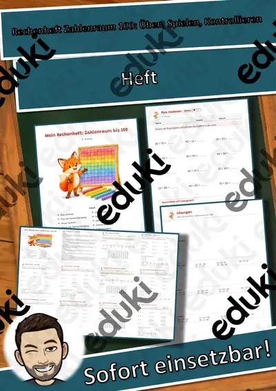
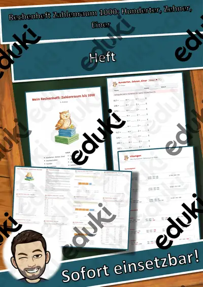
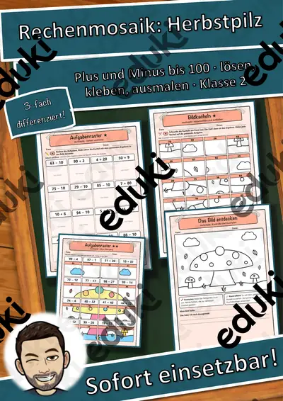
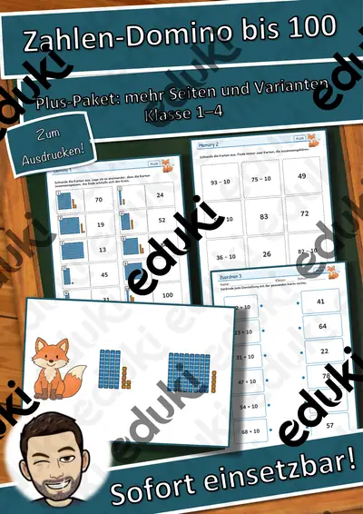
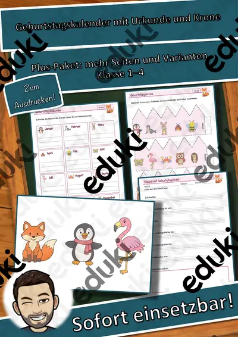
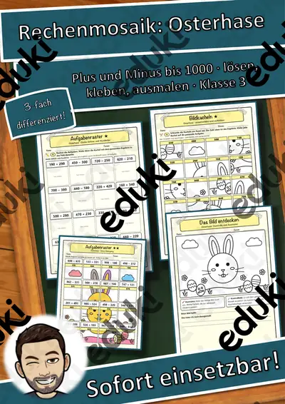
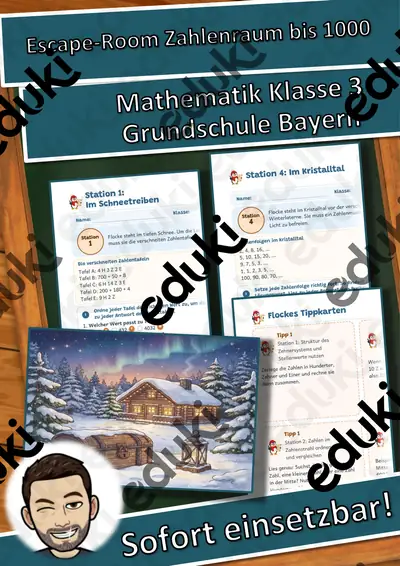

Rechenheft Zahlenraum 20: Übungsheft mit Selbstkontrolle
Dein Rechenheft für den Zahlenraum bis 20 (Klasse 1): 71 Seiten zum Üben, Verstehen und Selbstkontrollieren.
Inhalt: Plus, Minus, Zahlzerlegung, Zahlenstrahl und Rechenrahmen. Zu jedem Thema gibt es eine Merkseite mit Anschauung und drei Übungsseiten in drei Niveaustufen (leicht, mittel, schwer), dazu Rätsel mit Lösungswort zur Selbstkontrolle, Tests, eine Urkunde und alle Lösungen.
Für die Lehrkraft: Lehrerinfo mit Lehrplanbezug, Differenzierung ohne Mehraufwand, sofort einsetzbar für Freiarbeit, Wochenplan, Förderung und Vertretung. Alle Aufgaben, Texte und Zeichnungen sind eigens erstellt.
Name, Klasse und Datum stehen auf jedem Blatt. PDF zum Ausdrucken.
FachMathematik
KlasseKl. 1
SchulformGrundschule
MaterialartArbeitsblätter
Ähnliche Materialien

Rechenheft Zahlenraum 100: Üben, Spielen, Kontrollieren

Rechenheft Zahlenraum 1000: Hunderter, Zehner, Einer

Rechenmosaik Herbstpilz: Plus und Minus bis 100 – lösen, kleben, ausmalen in 3 Stufen (Klasse 2)

Materialpaket Einmaleins (auch Homeschooling) Übungsheft (kleines Einmaleins)

Domino-Werkstatt: Zahlen-Domino bis 100 – Plus-Paket, Klasse 1–2

Klassen-Werkstatt: Geburtstagskalender mit Urkunde und Krone – Plus-Paket, Klasse 1–4

Rechenmosaik Osterhase: Plus und Minus bis 1000 – lösen, kleben, ausmalen in 3 Stufen (Klasse 3)
